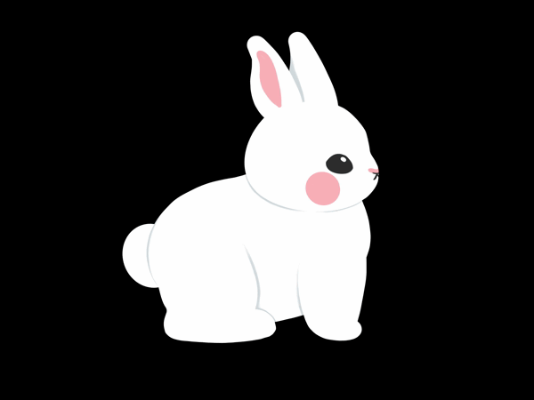
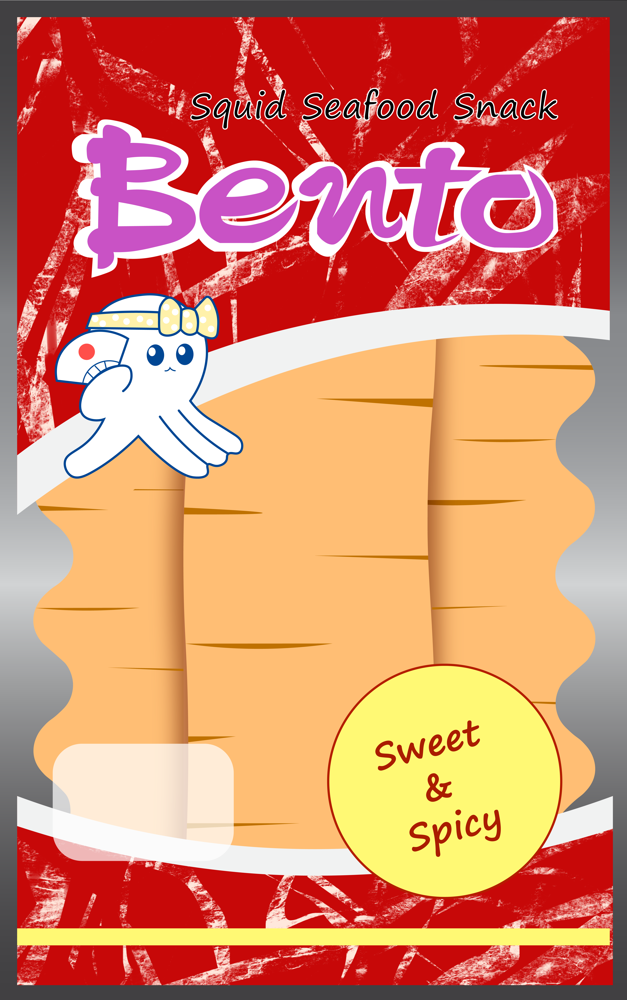

Feelin’ Snackish is a 3d virtual installation based on two snacks from childhood:
White Rabbit Candy and Dried Squid.
Created with: Blender, Unity, Procreate, Adobe After Effects, Adobe Illustrator
Click here for download.
Characters created for the two snack worlds. Ended up not using model on the right.
Base islands without extra objects.
Some other assets that I created such as custom textures for Blender,